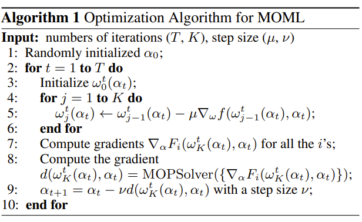
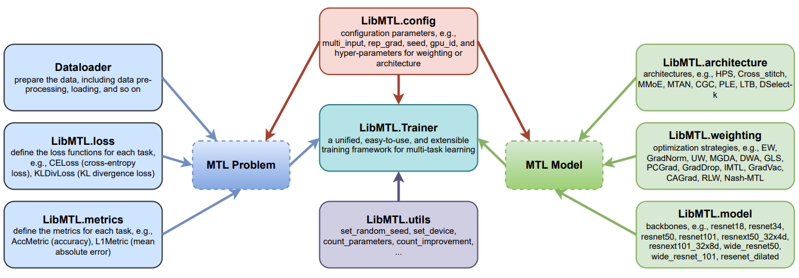
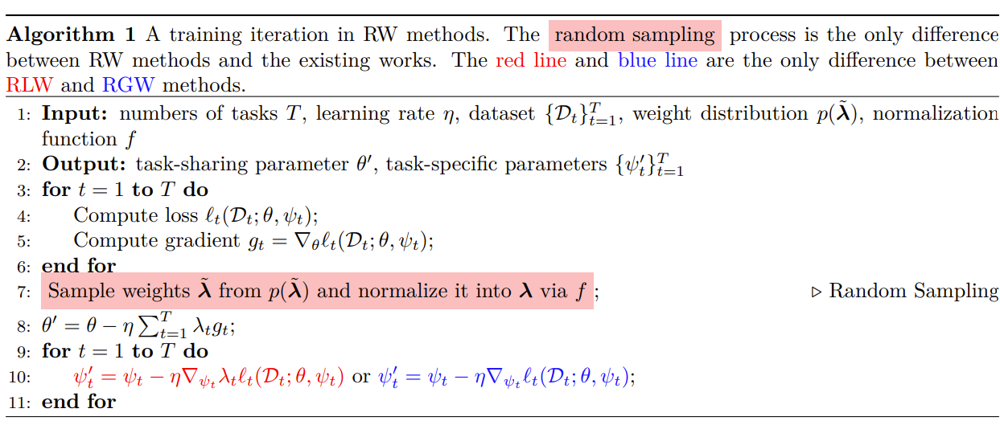
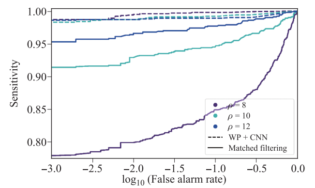
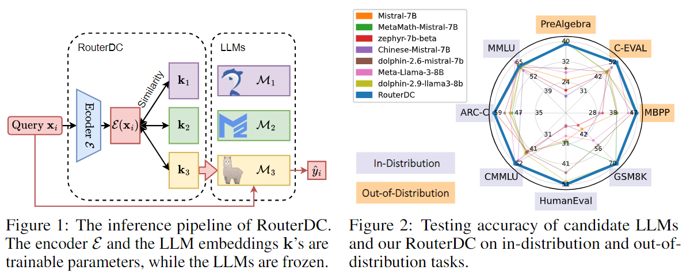
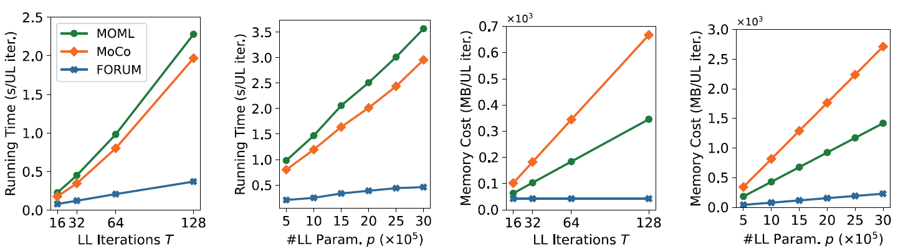
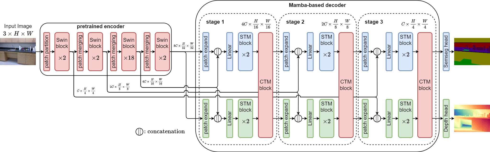
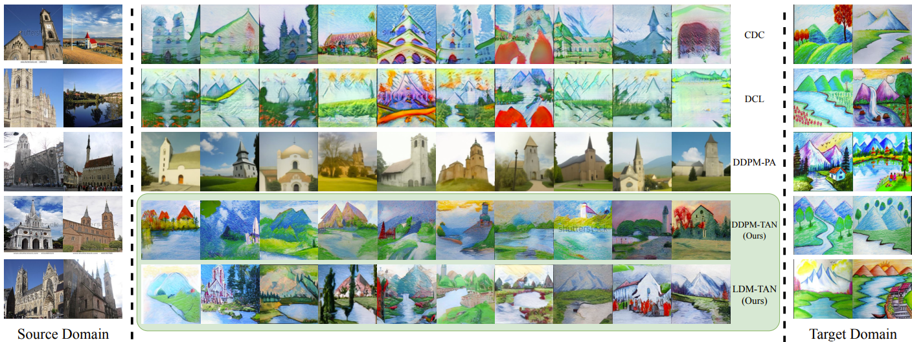
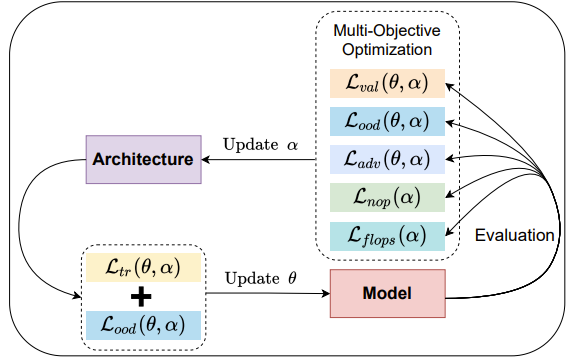
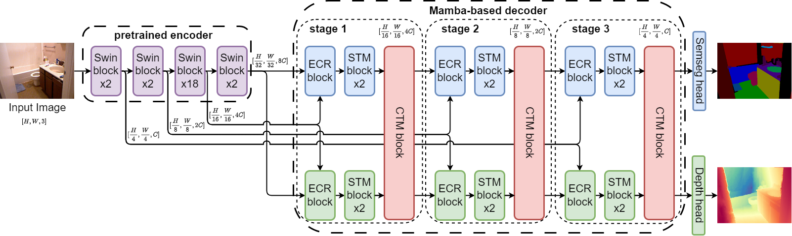

Baijiong Lin
Ph.D. Student, HKUST(GZ)
blin241 (at) connect.hkust-gz.edu.cn
bj.lin.email (at) gmail.com
Biography
Baijiong Lin
(林百炅)
is a third-year Ph.D. student in Artificial Intelligence Thrust at The Hong Kong University of Science and Technology (Guangzhou), supervised by Prof. Ying-Cong Chen.
Previously, he worked with Prof. Yu Zhang at Southern University of Science and Technology.
His research interests include deep learning, machine learning, and AI4Science, especially in multi-task learning and large language models.
Publications
(* indicates equal contribution, highlight indicates representative papers)
Journal Papers

Artificial Intelligence (AIJ), 2024
@article{ye2024moml,
title={Multi-Objective Meta-Learning},
author={Ye, Feiyang and Lin, Baijiong and Yue, Zhixiong and Zhang, Yu and Tsang, Ivor},
journal={Artificial Intelligence},
volume={335},
pages={104184},
year={2024}
}


 /
/
@article{lin2023libmtl,
title={{LibMTL}: A {P}ython Library for Multi-Task Learning},
author={Baijiong Lin and Yu Zhang},
journal={Journal of Machine Learning Research},
volume={24},
number={209},
pages={1--7},
year={2023}
}

@article{linreasonable,
title={Reasonable Effectiveness of Random Weighting: A Litmus Test for Multi-Task Learning},
author={Lin, Baijiong and Ye, Feiyang and Zhang, Yu and Tsang, Ivor},
journal={Transactions on Machine Learning Research},
year={2022}
}

@article{lin2020binary,
title={Binary neutron stars gravitational wave detection based on wavelet packet analysis and convolutional neural networks},
author={Lin, Bai-Jiong and Li, Xiang-Ru and Yu, Wo-Liang},
journal={Frontiers of Physics},
volume={15},
pages={1--7},
year={2020},
}
Conference Papers

@inproceedings{chen2024RouterDC,
title={{RouterDC}: Query-Based Router by Dual Contrastive Learning for Assembling Large Language Models},
author={Shuhao Chen, Weisen Jiang, Baijiong Lin, James T. Kwok, and Yu Zhang},
booktitle={Conference on Neural Information Processing Systems},
year={2024}
}

@inproceedings{ye2024forum,
title={A First-Order Multi-Gradient Algorithm for Multi-Objective Bi-Level Optimization},
author={Ye, Feiyang and Lin, Baijiong and Cao, Xiaofeng and Zhang, Yu and Tsang, Ivor},
booktitle={European Conference on Artificial Intelligence},
year={2024}
}

@inproceedings{lin2024mtmamba,
title={{MTMamba}: Enhancing Multi-Task Dense Scene Understanding by Mamba-Based Decoders},
author={Lin, Baijiong and Jiang, Weisen and Chen, Pengguang and Zhang, Yu and Liu, Shu and Chen, Ying-Cong},
booktitle={European Conference on Computer Vision},
year={2024}
}

@inproceedings{wang2024bridging,
title={Bridging Data Gaps in Diffusion Models with Adversarial Noise-Based Transfer Learning},
author={Wang, Xiyu and Lin, Baijiong and Liu, Daochang and Chen, Ying-Cong and Xu, Chang},
booktitle={International Conference on Machine Learning},
year={2024}
}

Oral Presentation
@inproceedings{yue2022effective,
title={Effective, efficient and robust neural architecture search},
author={Yue, Zhixiong and Lin, Baijiong and Zhang, Yu and Liang, Christy},
booktitle={International Joint Conference on Neural Networks},
year={2022}
}
@inproceedings{ye2021moml,
title={Multi-Objective Meta Learning},
author={Ye, Feiyang and Lin, Baijiong and Yue, Zhixiong and Guo, Pengxin and Xiao, Qiao and Zhang, Yu},
booktitle={Conference on Neural Information Processing Systems},
year={2021}
}
Preprints

@article{lin2024mtmambaplus,
title={{MTMamba++}: Enhancing Multi-Task Dense Scene Understanding via Mamba-Based Decoders},
author={Lin, Baijiong and Jiang, Weisen and Chen, Pengguang and Liu, Shu and Chen, Ying-Cong},
journal={arXiv preprint arXiv:2408.15101},
year={2024}
}
@article{jiang2023byom,
title={{BYOM}: Building Your Own Multi-Task Model For Free},
author={Jiang, Weisen and Lin, Baijiong and Shi, Han and Zhang, Yu and Li, Zhenguo and Kwok, James},
journal={arXiv preprint arXiv:2310.01886},
year={2023}
}
@article{lin2023scale,
title={Dual-Balancing for Multi-Task Learning},
author={Lin, Baijiong and Jiang, Weisen and Ye, Feiyang and Zhang, Yu and Chen, Pengguang and Chen, Ying-Cong and Liu, Shu and Kwok, James T.},
journal={arXiv preprint arXiv:2308.12029},
year={2023}
}
Education
Ph.D. in Artificial Intelligence
Sep. 2022 - Present
Guangzhou, China
B.Sc. in Information and Computing Science
Sep. 2016 - Jun. 2020
Guangzhou, China
Experiences
Visiting Student | Supervised by
Prof. Hao Chen
Sep. 2024 - Present
Hongkong, China
Research Intern | Supervised by Dr. Pengguang Chen and Dr. Shu Liu
Apr. 2022 - Sep. 2022
Shenzhen, China
Research Assistant | Supervised by Prof. Yu Zhang
Jul. 2020 - Mar. 2022
Shenzhen, China
Research Intern | Supervised by Prof. Xiangru Li
Mar. 2017 - Jan. 2020
Guangzhou, China
Awards
Outstanding Undergraduate Thesis Award, South China Normal University
2020
Outstanding Undergraduate Award (about Top 1%), South China Normal University
2020